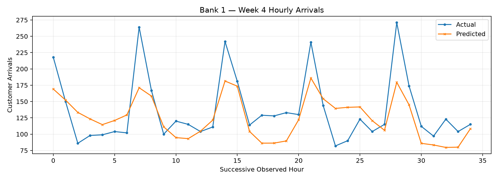
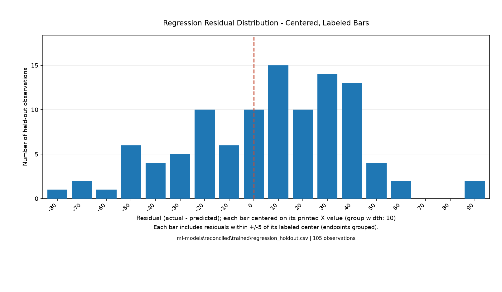

This is a separate experiment from the original Dataset B shown below.
Random Forest was trained on 576 simulated business days and evaluated on 144 later, held-out simulated business days.
These metrics were imported from the generated metrics.json evaluation report.
Classification accuracy95.14%137 of 144 days correctly classified
Balanced classification accuracy94.93%Across low, moderate, high traffic
Majority-class baseline40.28%Reference classifier
Regression median absolute residual1.28Simulated visitors per hour
Regression mean signed residual-0.18Actual minus predicted
Random Forest classification — held-out confusion matrix
Actual / Predicted
Low
Moderate
High
Low
40
0
0
Moderate
2
39
5
High
0
0
58
Research limitation: These models were evaluated only on artificially generated patterns.
This result does not establish 95% accuracy on actual Philippine bank customers. Original Dataset B results below
remain unchanged. This panel does not mean the live forecasting API serves these newer trained models.
Dataset intelligence / research evaluation
Random Forest: Observed vs Simulated Data
Classification and regression are evaluated separately within each dataset. These are saved holdout results from models already trained in the project, not a live retraining run.
Dataset and performance comparison
Loading saved model evaluation files...
Performance evidence
Observed Nigerian data
Simulated 2026 data
Classification: higher accuracy is better within the same test set. Regression: smaller median absolute residual is better within the same data scale. Residual = actual count minus predicted count.
Dataset A / Recorded historical observations
Observed Nigerian bank arrivals
Three banksFour observation weeksTrain weeks 1-3, test week 4Not live Philippine data
Random Forest Classification — confusion matrix
Random Forest Regression — actual vs predicted

Bank 1: observed and predicted arrivals in the held-out periodBank 2: observed and predicted arrivalsBank 3: observed and predicted arrivals
Regression residual distribution

Actual minus predicted, in observed customers per hour
The observed-data experiment achieved its recorded test results on a limited four-week Nigerian sample. The synthetic experiment achieved a 24.24% classification accuracy and only a small regression improvement over its slot-median baseline. Neither model has been validated against arrivals at a Philippine branch, and the synthetic dataset does not add actual historical observations.
Method: These plots and metrics are from saved trained-model predictions on held-out records. The interface does not claim that opening this page trains or tests a new model. To refresh the evidence after retraining, update the saved model outputs and rerun this PowerShell patch.